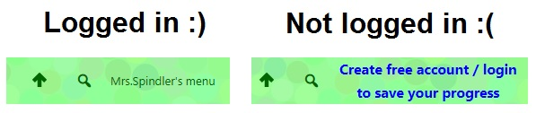

ICS2O: Introduction to Computer Studies, Grade 10, Open
Unit 2: Intro to Python
Activity 4: Extension Modules
Python Programming
Make sure that before you work on your Python tutorials, that you are LOGGED IN to your CSCircles account. Look at the top right corner of your screen to verify that you are logged in.
(It is possible to complete the activities without logging in, but I will be unable to give you credit for your progress. So LOG IN!)
The last set of modules are very advanced, and explore topics that you will see later in senior computer science courses. Students who are very curious about the world of computer science are encouraged to give them a try, but be aware they are beyond the scope of this course!
- 15A: Termination Determination
- 15A: Reading the Program
- 15A: Go to it!
- 15A: Smart Simulation
- 15A: BASIC Simulator
- 15B: Python Pushups
- 15B: Forty Below In The Winter
- 15B: Credit Check
- 15B: Poetic Analysis
- 15B: Be Choosy
- 15C: Caesar's JVTIVK JRCRU IVTZGV
- 15C: Spy Coder
- 15C: Spy Decoder
- 15C: Auto-Decryption
- 16: Recursion
- 16: Blast Up
- 16: Double Time
- 16: Digital Sum
- 16: Digital Root
- 16: GCD
- 16: Hailstone
- 16: Searching a Nested List
- 16: Fractal Ruler
- 17: Is
- 17: List Argument
- 17: True Count
- 18: Efficiency
- 18: Nibofacci
- 18: Fast Fibonacci
- 18: Primed for Takeoff